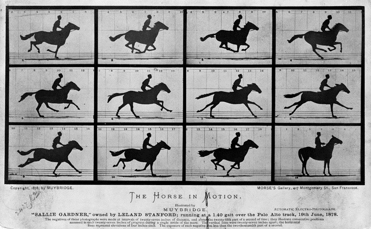

Transducing Embodied Inscription Practices with the Kinect
Matthew Halm
North Carolina State University
(Published March 11, 2020)
Introduction
Writing, particularly in its many digital incarnations, is complicated. A diverse group of technologies and devices are employed, and the exact compositions of “writer” and “writing” can expand to include an exhausting array of components. In some ways this has always been the case, but networked digital technologies and practices are particularly prominent complications for the ways writing is conducted and thought about today. In the study of writing, many approaches have developed in response to complexity observed in its subject, and they offer accordingly complex ways of theorizing writing. Some of these approaches include the move toward posthumanism, emphasis on the role of the body, and attention to the digital technologies themselves that are involved. At times such approaches can appear contradictory, but important overlaps suggest avenues for further investigation. In particular, posthuman theories of embodiment draw attention to the enmeshed interactions between technologies and the users of those technologies, suggesting that “interfaces” between those entities are far more complicated than traditionally conceived. And as new technologies continually emerge, it can be difficult, as John Tinnell laments, to keep up in an “era of permanent innovation” (“Grammatization” 133).
Rather than attempt to reconcile apparent paradoxes between theories of writing in the hopes of producing a new theory to replace them, this article proceeds with Raúl Sánchez’s warning about the self-referential nature of writing theory in mind. Sánchez has noted that because theories of writing are themselves typically composed with writing, this means that “to write a theory of writing is to make (or sever) connections between or among relevant terms” (“In Terms” 25) rather than between entities which are somehow “more real” than those terms. This leads Sánchez to caution those engaged in theorizing writing to remember that they can never “[gain] some purchase on reality” and instead remain “within a terminology” (“In Terms” 26). Writing theories of writing is a circular endeavor, and while Sánchez finds it productive despite (or because) of that circularity, it must be conducted carefully to avoid the appearance of an ability to transcend its own written nature. Writing about writing is incredibly useful but will never (and should never) lead to an end of theorization. While a theory of writing conducted with a technology other than writing would face similar challenges (itself being limited to its own register of “terms”), approaching writing from a perspective slightly askew from it can also offer potentially unusual insights into writing’s behavior. If writing can be theory, other technologies can be theory too.
As an example of theorizing with technology, this article examines the Microsoft Kinect, a depth camera, as a “tool” (or, more appropriately, an embodied mode of becoming) for making theory about writing. The Kinect offers a different vantage point from which to theorize writing, and it is itself an example of digital technologies which accelerate change in what writing can be. Before turning to the specific example of the Kinect, this article focuses on the concept of transduction to describe the residual transfer of material during an encounter between entities, a concept motivated by a posthuman explanation of embodiment and its troubling of distinctions between the “inside” and “outside” of technological entities. When writers write, unexpected things happen. Observing or explaining these unexpected results can be challenging, particularly when remaining within the framework of a theory of writing that demarcates an “inside” and “outside” of writing, and which is composed with writing, (therefore itself at least partially the product of unexpected interactions). The Kinect, or any other device or approach, does not obviate these difficulties but provides a supplemental vector on which to corroborate or provoke theorization. In its capacity to recognize gestures, the Kinect is not too far removed from writing technologies like touchscreens or keyboards or even pencils, which could be described as devices for recording highly specialized gestures and producing written inscriptions. The Kinect is a profoundly embodied technology, which demonstrates the interplay between humans and machines in real time, as users interact with the sensor. This article uses the Kinect to both observe and recontextualize understandings of transduction with respect to complex digital and networked writing situations and concludes with an experimental example of how the Kinect can be used to think writing differently.
Posthumanism and Embodied Inscription
In attempting to theorize increasingly complex writing situations, understanding how (or how not) to delineate between the entities involved can give rise to tensions between parallel emphases on posthumanism and the body. The move toward posthumanism “focuses on the critique of the humanist ideal of ‘Man’ as the allegedly universal measure of all things” (Braidotti 31–32), while embodiment serves to emphasize the always materially-situated nature of human interactions with technology (Wysocki, “Introduction” 4). While decentering the human and foregrounding the body can appear contradictory, N. Katherine Hayles chooses to focus on embodiment as process rather than bodies as distinct entities because of the important role of material context in her articulation of the posthuman. As Hayles clarifies in her book How We Became Posthuman, embodiment “never coincides exactly with ‘the body,’ however that normalized concept is understood” but instead is “the specific instantiation generated from the noise of difference” (196). Considering embodiment as an ongoing process rather than “bodies” as discrete entities is in line with Wysocki’s emphasis that bodies “are not fixed” and that “We come to be always already embedded—embodied—in mediation” (“Introduction” 4). Bodies are processes, and a posthuman perspective actually provides a more expansive way to understand the human even though it sometimes appears, superficially, to abandon it.
Indeed, posthumanism is more complex than a move “beyond” the human in either negative or positive terms. Rosi Braidotti explains that “it is inappropriate to take the posthuman either as an apocalyptic or as an intrinsically subversive category, narrowing our options down to the binary: extinction-versus-liberation (of the human)” and that posthumanism is “normatively neutral” in the observations it enables about humanity (35). The “post-“ in posthumanism is not a teleological step, leaving humanism behind in a progression toward more “correct” thought, but an acknowledgement of intractable and unavoidable problems with humanism. For Cary Wolfe, posthumanism “comes both before and after humanism: before in the sense that it names the embodiment and embeddedness of the human being in not just its biological but also its technological world” and “after in the sense that posthumanism names a historical moment in which the decentering of the human by its imbrication in technical, medical, informatic, and economic networks is increasingly impossible to ignore,” therefore demanding new theories (xv). Via posthumanism, embodiment can be “recovered” from simplistic humanist frameworks and expanded to more adequately account for the complex digital and networked technological compositions that writers increasingly find themselves in. As we will see below with the example of the Kinect, the device is both part of the user’s embodiment and separate from it. The relationship between writing as technology and writing as “extension” of the human (especially in digital contexts) is similarly troubled.
A posthuman understanding of writing has gained some acceptance in composition studies as a robust means of depicting the complex relationships that writing exhibits and enables. Casey Boyle, for example, develops an account of writing and rhetoric which via posthumanism sees them as practices “irreducible to an individual’s agency” (540). The application of posthumanism to the study of writing is both intuitive and potentially controversial, as Sidney Dobrin summarizes in his introduction to the collection Writing Posthumanism, Posthuman Writing. On the one hand, Dobrin writes, “writing theory is always already a posthumanist theory given that human interaction with technologies like writing are precisely the kinds of convergences that allow the becoming of the posthuman” (“Introduction” 3). At the same time, however, it could be argued that “technologies like writing are, in fact, what make us uniquely human” (Dobrin, “Introduction” 3). Ultimately these perspectives are not incompatible but reflect a difference in perspective on the feasibility of a demarcation between the human and the nonhuman (or the “inside” and the “outside”). The first perspective could just as easily be written in the style of the second to state that technologies like writing are, in fact, what make us uniquely posthuman. Writing, and many other technologies besides, reveals the fact that our humanity is not a simple question of biology or morphology. How we define ourselves (often with writing, as Sánchez reminds us) is itself a technological endeavor.
Posthumanism provides a helpful corrective to more linear or simplistic understandings of writing, but under posthumanism it can be difficult to explain the relationship between interiority and exteriority—between what is and is not part of the human or part of the technology—because for posthumanism the human is always already caught up in technology. To some extent this is the usefulness of posthumanism; the human and the nonhuman are each a fundamental part of the other, and attempts to distinguish the two or place one prior to the other are counterproductive. Understanding this intermingled nature requires the development of terminology and approaches which do not presuppose simplistic frameworks demarcating “inside” and “outside” but which can instead describe non-hierarchal interactions between various “sides” of entities in contact with one another.
Negotiating So-Called Inside and So-Called Outside
One of the important complications that posthumanism provides is a blurring (or obliteration) of distinctions between “inside” and “outside” with respect to the human or posthuman entity in question. If the human comes to be always already embedded in a technical environment, it is only retroactively that a distinction between what is or is not “human” can be applied. For Sánchez, traditional articulations of “inside” and “outside” with respect to writing rely on a representational understanding of writing: inscription is traditionally understood as “what happens out there (as marks on a page or pixels on a screen),” while composition is what “happens in here (in mental states that are essentially private despite multiple input streams of text and information)” (Inside 3). The representational position is therefore at odds with the posthumanist one; in a representational understanding of writing there is a clear distinction between the human writer and the technology of writing, which posthumanism refutes. As such, Sánchez’s critique of representation is fundamentally a call for a posthuman understanding of the writing subject. Posthumanism suggests that there is no permanent distinction between “inside” and “outside.” For theories of technology like writing this means that in many respects the user of a technology and the technology itself border on indistinguishable from one another. This has beneficial implications for a more accurate understanding of the roles of the human and the technology in the writing process, but “recovering” the subject is nevertheless a seemingly desirable prospect given composition’s historical (though fraught) focus on student writers. Sánchez suggests that the event of writing, when so-called “inside” and so-called “outside” meet, is a productive way forward in theorizing the writing subject in the face of such challenges (Inside 9). However, inherent in this notion is a reinforcement of a distinction, however blurred, between inside and outside, divided along the boundary of interface.
Interface as a conceptual label describes a perceived point where systems meet, such as between a human and a computer, but as posthumanism has rightly complicated there is no tenable distinction between different classes of systems—interfaces are not boundaries but are instead simply other systems, ontologically indistinguishable from the rest. Attempting to further delineate some supposed crossing-over point between inside and outside (imagined with the concept of interface) is, as Alexander Galloway suggests, a futile endeavor. Galloway argues that we “must transgress the threshold, as it were, of the threshold theory of the interface” (39). Thinking of interfaces as “windows” or “doors” implies that an interface “imposes no mode of representation on that which passes through it” (39–40). On the contrary, to paraphrase Marshall McLuhan, the interface is the message.
In the context of the study of writing, Tinnell has made a similar argument by articulating the insufficiency of understanding writing as a tool which augments the human. Tinnell suggests that “by clinging to the augmentation mode(l) of human-computer relations, digital tools scholarship endorses an instrumental view of writing that seems to be incapable of registering the dissolving border that (supposedly) once separated humans and technology” (“Post-Media” 125). Instead of understanding writing as an augmentation, Tinnell suggests the concept of autopoiesis, which he develops from the ecosophy of Félix Guattari. For Guattari, autopoiesis is a “continual emergence of sense and effects” which is never a copy (or representation) of what has come before (Chaosmosis 37). Tinnell deploys this term to argue that the “subjectivity of the writing subject is no more stable than writing, itself an open dynamic system,” and so “the parts that constitute systems of writing (and writing as a system) develop relationally” (“Post-Media” 130). Writing and the writing subject develop autopoietically, which is to say that they come into being dynamically and are always changing, becoming something else, producing new ways of being.
Natural User Interface (NUI) technologies like the Kinect are a locus both for the ways the human/machine relationship often gets thought about in the traditional interface or tool-based ways described above, as well as for how those traditional understandings might be enhanced with more careful attention. Complex technologies have long been sites of attempted simplification of the means through which humans interact with them. Complex technologies typically require accordingly complex interfaces, but such complex interfaces can restrict access to the powerful things that complex technologies can do. In addition to being challenging to use, complex interfaces can require certain bodily motions not all humans are capable of performing. Such perceived impediments are directly cited as leading to the creation of the Kinect: its patent application suggests that typical input controls for computing applications such as “controllers, remotes, keyboards, or mice . . . can be difficult to learn, thus creating a barrier between a user and such games and applications” (Latta et al. 1). Various computer interface devices have been designed in attempts to enable input which more closely resembles the ways humans interact with other “simpler” technologies, or with the natural world. For example, despite the familiarity most current computer users have with a mouse and keyboard, the devices are relatively alien compared to pre-computer technologies. Rather than a mouse and keyboard, a touchscreen and a stylus are analogous input devices, which may be said to be more “natural,” if the standard for naturalness is analog media. Touchscreens and trackpads allow gesture-based input with human fingers, which relies on a seemingly intuitive understanding of what “should” happen when a certain gesture is performed on a surface, while styluses allow textual input based on gestures associated with handwriting.
But the development exemplified by these NUI technologies presumes that other user interface systems (e.g. buttons) are not “natural.” Becoming accustomed to any technology, especially by being born into a world where it already exists, causes its requisite interfaces to feel more natural to users of that technology. A delineation between the natural and the non-natural is therefore a function of the technological environment. Bernard Stiegler, via André Leroi-Gourhan, describes how humans interiorize parts of their technical environment which become parts of themselves and exteriorize parts of themselves which become parts of the technical environment, which are then interiorized by other humans, and so forth (153). Technology, in this system, is part of an environment that exists prior to individual human thought. The cycle of exteriorization and interiorization continues because of an evolutionary process of selection which creates a “technical tendency” within the environment, impelling certain technics to continue to be revealed because the conditions of the world lend themselves to their development (44). The inside and the outside continually produce one another and are, in fact, “the same thing” (142). In the context of an interface, Stiegler’s understanding of this ongoing cycle of interiorization and exteriorization suggests that any distinction between so-called natural or unnatural interfaces is unclear or even nonexistent; we are always incorporating parts of technologies into who we are, and technologies are always incorporating us into how they work.
Attempts to create NUIs like the Kinect reveal a tension between technology, which we perceive to be unnatural, and the human, which we perceive to be natural. As Dobrin’s summary of posthumanism’s influence on composition studies points out, the extent to which a technology is considered natural is a matter of perspective. Determining what counts as a “natural user interface” requires determining what we mean by “natural,” and by extension what we mean by human. Traditionally conceived, interfaces are bridges between humans and technology, between consciousness and the world, between inside and outside. But as humans and technology intermingle, as they have always done, the difference between inside and outside is unclear. As Stiegler explains, inside and outside continually exchange places in always ongoing cycles of interiorization and exteriorization, and pieces of one are carried into the other. Or, put another way, the interface is already also both the inside and the outside (because inside is already outside and vice versa). As systems recede into each other and merge outside and inside, pieces of the inside and outside exchange places and leave behind traces of one another. This is a process which Stiegler and others have called transduction. The Kinect offers a unique opportunity to observe transduction and theorize writing based on an understanding of what transduction does.
Transduction
Interfaces are not bridges between inside and outside, inside and outside are their own bridge between themselves, and the “bridge” is continually being rebuilt. Instead of relying solely on an understanding of technologies as interfaces, we might more fruitfully turn our attention toward the residue left behind by the transfer of fragments between systems, as those systems come into contact with one another—fragments which always change form in the process. This residual transfer, described by certain interpretations of the term transduction, offers a way of revealing evidence of proximity between systems (such as writer and writing) without attempting to name a certain technology as “interface” between the two. Transduction has been given recent attention in the study of writing and rhetoric. Casey Boyle, James Brown Jr., and Steph Ceraso similarly suggest that such a focus on transduction “helps account for the ambience of the digital” (its pervasiveness and boundary-crossing qualities) because of transduction’s multisensory and multidisciplinary contexts (257). Wysocki has also turned to the term as a way to foreground our “sensuous engagements with the world and each other” (“Unfitting” 94). In the context of Sánchez’s event-based theory of identity, transduction offers a way to further distance an understanding of writing from a representational paradigm: the event of writing is not the interface between writer and writing in which something is placed within a recognizable framework of repetition; but, instead, the event of writing is the process of each system leaving traces of itself on the other, therefore producing new ways of being for each system involved.
Most simply, transduction describes a “conversion of one energy form into another” (O’Sullivan and Igoe xix). An electrical impulse might be converted to light emitted from a diode, for example, or sound detected by a microphone might be converted into textual data. Whenever we interact with technologies of any kind, energy is transduced from one form to another, often many times over. Even interactions with the natural world can transduce energy, as in the example of friction creating heat as a result of movement. David Rieder, who finds in transduction the potential for moments of rhetorical action, specifies that transduction involves connections between human and machine: “When the virtual and the real are folded together in some novel way, a moment of transduction has occurred” (Suasive 11). Rieder’s description of transduction as rhetorical depends on his further understanding of the rhetorical as precisely this moment of folding-over between the real and the virtual, a “process of hybridization” he refers to as eversion (Suasive 5). Rhetoric in this sense reveals the mediated nature of the technological environment, the “gap between self and world,” between inside and outside; recreating that gap in such a way as to reveal how it works is eversion, both “the outcome as well as the moment of suasion” (Suasive 12, 14). By revealing how the world works, eversion (which relies on transduction) moves an audience and creates the ground for rhetoric.
In addition to an embodied change in medium, transduction describes a process of residual transference as a result of proximity between entities. According to Gilbert Simondon, transduction is “an operation—physical, biological, mental, social—by which an activity propagates itself from one element to the next” (11). In genetic contexts, transduction describes how DNA is transferred as a result of contact between cells and a third party like a virus, leading to mutations and species diversity (Griffiths et al.). It is this propagation across bodies, changing along the way because each body is a different medium, that leads to transference of residual material, oftentimes in unexpected ways. In some sense this is the normal functioning of all semiotic systems; transduction is “the idea that, in essence, something is conducted, something happens between chains of semiotic expression and material chains” (Seem and Guattari 39), prior to signs being coded into a representational system. Stiegler describes the cycle of interiorization and exteriorization noted above as a process of transduction: when bodies (humans, technologies, the environment, and so on) come into contact, each leaves traces of itself on the others. In this way the technological world takes up fragments of the human, and the human takes up fragments of the technological world, and these fragments must fundamentally change (mutate) in some way to be taken up by the new system. Transduction is therefore not the interface between bodies but evidence of their one-time proximity to one another. Interaction between systems leaves something behind, creating mutations and unexpected variations.
Transduction demonstrates that the identity of a human is intermingled with and indistinguishable from technology; the reverse is also true, and a technology we might identify as an interface is further intermingled and indistinguishable. Each is composed of traces of the others. Boyle, Brown, and Ceraso emphasize this key implication of a focus on transduction when they write that “a transductive process is not interactivity between separate nodes but a relational practice assuming pervasive connections across disparate registers” (258). Rather than one process producing many different entities, the composition of many different entities continually produces those entities and new forms of those entities. Additionally, as Sánchez argues within the context of the technology of writing, the notion of exteriority is itself a function of that technology (Inside 9): if we only know that there is something “outside” of the human via technology (an infrared camera, perhaps), then the notion of the human as somehow distinct from that technological outside is itself dependent on technology. Again, Sánchez’s depiction of circularity reminds us that the task of theorization relies on the very technology it seeks to explain. This is partly the same reason Dobrin observes that “humanist and postmodern notions of subjectivity . . . have been rendered obsolete,” requiring a “refiguring of the subject as posthuman, non-autonomous agent” (Postcomposition 17). The posthuman is an integrated part of technologies, “able to flow and redefine as the surrounding environment demands it or imposes it” (Dobrin, Postcomposition 65). Sánchez accordingly retheorizes identity “so that it describes the relationship between the inside and the outside of writing at the moment of a text’s creation—that is, during an individual act of writing” (Inside 9). The distinction between inside and outside is of less importance for understanding subjectivity than their interactions with each other, interactions which are evidenced by transduction.
Sensing Transduction with the Kinect
The Kinect is a device with relatively unique affordances that might be deployed to observe and recontextualize the complex theorizations described above. Initially released in 2010 for the Xbox 360, refreshed in 2013 for the Xbox One, and discontinued in 2017, the Microsoft Kinect rode a wave of NUI devices for gaming consoles perhaps more famously popularized by the Nintendo Wii. While that particular wave appears to have subsided in the gaming world, supplanted by a new turn toward VR, the mechanics underlying the Kinect continue to be used in a variety of other technologies such as FaceID on the iPhone X, which uses a Kinect-like sensor to allow users to unlock their phones with facial recognition. A new version of the Kinect has been announced by Microsoft which will take the device in directions that have yet to be fully realized (“Microsoft Build”), and depth cameras like the Kinect are currently being produced by several companies such as Orbbec and Intel, which produce cameras called the Astra and RealSense, respectively. Such depth cameras are beginning to be included on smartphones and laptops, and may eventually become a ubiquitous replacement for webcams in devices of all kinds. Further afield from consumer electronics (for now), robots like the SpotMini, produced by Boston Dynamics, use similar depth cameras to “see” their surroundings and avoid obstacles or find certain objects and interact with them (“SpotMini”).
As an early incarnation of an increasingly prominent form of NUI device, the Kinect offers a perspective on “interfacing” between humans and technology that exposes the fundamentally embodied nature of all technology. When interacting with the Kinect (and indeed with any technology), inside, outside, and interface fold onto each other and in so doing leave behind traces of themselves on each other; more than most technologies, the Kinect can make this overlap visible. The interface must allow manipulation by the body as sensed by the Kinect (a body that must adapt to be interpreted by the Kinect, perhaps by crouching or standing just so), which in turn makes that sensed body visible in the interface itself, as well as in the software being manipulated.

Figure 1. First-generation Kinect with outer housing removed. The three large cylindrical components, from left to right, are the infrared projector, color camera, and infrared camera.
Both first- and second-generation Kinect peripherals contain three types of sensors: a color video camera, a series of microphones, and an infrared camera alongside an infrared projector (figure 1). While the color camera and microphones are important components of the device, it is the infrared sensor and accompanying infrared projector that enables the Kinect and similar depth cameras to use human body movements as input without additional identifying garb such as the characteristic “ping pong balls” used for cinematic motion capture. The sensor cluster works by projecting a field of infrared dots onto whatever is in front of the camera and recording the reflection of those dots on a subject with an infrared camera, either via a “structured light” technique in the first generation Kinect or “time-of-flight” in the second (Sarbolandi et al. 2–3). This allows the Kinect to determine the distance between the user and the sensor, and to create a three-dimensional “blob” of the user’s body, which is in turn used to generate a “skeleton,” which is what is actually used to register interactions between the user and the software (figure 2). It is the infrared sensor cluster that places the Kinect in a particular technological lineage as a form of natural user interface, and which reveals its continued influence on more contemporary technologies.
Figure 2. Skeletal data from a second-generation Kinect.
In the case of the Kinect, evidence of transduction (and therefore of the technologically embodied nature of the Kinect-using human) is readily apparent. Already we see a form of transduction taking place in the mediation of the user’s body into a three-dimensional “skeleton,” created with the combination of the Kinect’s infrared projector and infrared sensor. The digital skeleton is obviously not the actual user’s body, yet it bears some association to it; residual information from the human body has made its way through the processes of the Kinect, and the processes of the Kinect have left their mark on the human body, perhaps by conditioning it to move in a certain way, and by stripping it of many of its identifying features. While it is tempting to draw a direct connection from the human body to the digital skeleton (and subsequently to a video game avatar rendered to mimic the user’s motions and appearance onscreen), the sensory and computational steps involved in the process result in a variety of adjustments and additions to the original form of the body. These adjustments are further evidence of transduction.
First, when the infrared projector illuminates the body in front of the Kinect sensor, from the perspective of the Kinect, the body is a swarm of dots of infrared light arranged in a certain shape (as in figure 3). This shape has three-dimensional form and definition given the nature of the depth-sensing technology, but unlike an actual human body it is simply a comparatively low-resolution shell. The fidelity afforded by the sensor is adequate for the NUI interface for which it is designed, but there is nevertheless a discrepancy between the real body and the one sensed by the Kinect. A further complication is revealed by the possibility of so-called “infrared shadows” created by the offset between the infrared camera and infrared projector. If an object blocks the infrared projector, it can block part of the user’s body from being registered by the infrared sensor, even if the user’s body itself is not obscured from the sensor’s view. In order for the Kinect to “see” something it must also be able to shine its infrared light on it.
Figure 3. Infrared dots projected and sensed by a second-generation Kinect. Note the presence of “infrared shadows” in the background.
The details of how the infrared light is interpreted by the Kinect upon returning via the infrared sensor vary depending on the device’s generation. The original Kinect uses a “structured light” technique which operates as follows:
A sequence of known patterns is sequentially projected onto an object, which gets deformed by [the] geometric shape of the object. The object is then observed from a camera from a different direction. By analyzing the distortion of the observed pattern, i.e. the disparity from the original projected pattern, depth information can be extracted. (Sarbolandi et al. 2)
By contrast, the “time-of-flight” technique used by the second generation Kinect “is based on measuring the time that light emitted by an illumination unit takes to travel to an object, reflect off of it, and travel back to a sensor array” (Sarbolandi et al. 3). Both methods result in a depth-map of the subject in front of the sensor, but they differ in terms of how that information is acquired and, therefore, also in how extraneous information might be transduced alongside it. In addition to the possibility of infrared shadows, many other sorts of anomalies caused by factors such as temperature or surface reflectivity can occur (Sarbolandi et al. 3–5). Like any technological device the Kinect sensor is built to operate within a certain range of conditions that are not always immediately apparent in normal use. Transduction offers one path toward revealing that hidden context, thereby “everting” the technologically-embedded existence of the user.
After receiving the depth information from the infrared sensor, the Kinect software transforms that information into a digital skeleton. Again, this process necessitates altering the received patterns transduced from the subject’s body into another form, and again a number of anomalies (this time computational) could alter the eventual result. If a user’s body is not entirely visible to the Kinect the system will often still try to map a complete human skeleton onto it, sometimes resulting in strange crouching figures or other awkward poses. Perhaps more simply, the Kinect requires a fairly normative human body with which to assemble an interactable skeleton. Postures and poses not resembling a standing human figure are more difficult for the sensor to distinguish and can result in inaccurate skeletal renderings. Again, the issue of what counts as human manifests in the requirements for a NUI’s very existence: in order to be usable by a human, a NUI must be designed with certain types of humans in mind. While these various anomalies that may occur in the process of the infrared sensor’s operation are perceived as errors from the perspective of the Kinect as a gaming peripheral, they are nevertheless evidence of its technological existence as part of the embodied overlapping of human and machine. While any technology can be used critically to examine the underlying overlap between it and the humans involved in its processes, the Kinect is particularly suited to such examinations because of the highly visual and embodied ways it composes with its human users. The Kinect creates a new human on the screen as the user watches and performs with it.
Transduction as Methodological Orientation
The Kinect has the potential to make visible the means through which it interacts with the physical world, in Rieder’s terms “everting” the technical reality in which it is situated. The residual traces of that interaction are taken up by bodies engaged in its processes through transduction, and it is this transduction that can be used as a methodological orientation for seeing and understanding the relationship between the inside and outside of a technological subject. By focusing on the moment of transduction between inside and outside, we can understand a user’s interaction with technology (and technology’s interactions with a user), while acknowledging and incorporating the difficulty of ontologically distinguishing between user, machine, and interface.
Sánchez, via Hayles, explains that “we sense embodiment, materiality, and other species of the outside in instances and intervals, at moments of disjunction” (Inside 33). We subsequently conceptualize or name these sensations, bringing them “inside and therefore subject to the vicissitudes of representation” but these traces of the outside “fit” within ourselves imperfectly, therefore reminding us of “their exterior origins” (Inside 33). In other words, something has come along for the ride which does not conform with our expectations; transduction has occurred. While Sánchez sees this happening in the “interface” between inside and outside, focusing on transduction (the traces of the outside that do not “fit”) offers a means to explore the interaction between inside and outside without furthering a distinction between the two. This follows from Rieder’s suggestion that “we redirect our critical attention from the interface on the screen . . . to tactical or critical explorations of a body’s potential,” taking “body” to mean the posthuman process of embodiment incorporating arrangements of humans and machines (“From GUI to NUI”). Because the inside and outside are each always already the other, attempts to maintain the distinction necessary to demarcate an interface between them are problematic. Transduction instead names a process which creates traces of contact between the outside and inside (understood to be relative concepts), which produce the continual emergence of complexity through proximity between entities.
The emergence of complexity through residual proximity is central to Guattari’s mixed semiotics, which describes the constant coexistence of both signifying and a-signifying material (Guattari, Molecular 71–76). Processes which we associate with representation (perhaps the rendering of a digital skeleton corresponding to a user’s body) always bring nonrepresentational components along with them via transduction (perhaps a strange jiggling motion or an infrared shadow) and vice versa (the strange jiggling might “mean” something to certain observers, who might interpret it as humorous, for example). The Kinect, and technologies like it, can be a tool for observing certain manifestations of this sort of transduction. Guattari’s mixed semiotics is a possible route toward emphasizing the “mixed” nature of all technologies, including writing—which is itself a bodily technology like the Kinect, as graphic designers Ellen Lupton and Abbott Miller have noted by calling writing a “[substance] that the body periodically produces and eliminates” (50). When we interact with writing, for example, our bodies manipulate an “interface” (perhaps pencil and paper) which causes the associated technology to undergo a change according to our bodily movements. As has been seen in the case of the Kinect, however, such a distinction between technology (writing), interface (writing tool), and human (writer) collapses under posthumanism. We are all of these things and writing is all of these things. That the Kinect foregrounds the role of embodiment serves to emphasize the point that mediation is a process “not to be performed only on one; one is to be actively engaged with mediation” (Wysocki, “Introduction” 19). The nonrepresentational realms surrounding processes of representation, which are accessed through engagements such as material or affective encounters, can be traced by observing residue that entities leave behind during transductive events. Such an orientation accounts for the overlap and interaction between systems without reinforcing a distinction between them.
Writing (and Theorizing Writing) with the Kinect
The Kinect offers a way to re-examine the nature of writing. Programs which take data gathered from the Kinect and create “writing” via lines and dots of various colors could create potential boundary-cases or counterexamples for definitions of writing which presume it to be stable and fixed. As an example of such experimentation in a line of Kinect projects including Wysocki’s “The Autodidact at the Alphabet” and Kevin Brock and David Rieder’s “emBody(Text){,“ I created one such program using the Processing coding language to create a “sketch” based on data from the Kinect sensor. In addition to code I retrieved from the website of Thomas Sanchez Lengeling, the creator of the Kinect library for Processing, and from GitHub, I added functions that use the Kinect data to draw lines and shapes on the screen in various ways.1 The Processing libraries and existing code provide a means of taking data from the Kinect sensor and transforming (transducing) them into variables that Processing can manipulate.
The Processing sketch I created is fairly simplistic in that it only uses one of the many available “nodes” the Kinect is capable of recognizing on the human body: the hand. The sketch follows the movement of a user’s hand and creates images on the screen based on those movements in varying ways (by default the sketch rotates through these different modes of displaying the information it gathers). For example, one of the ways the sketch displays a user’s hand movements is by placing dots of varying size and color along the path the user’s hand follows (figure 4). The changes in size and color are determined by the speed of the user’s hand (or, more accurately, by the distance between each of the data points, which are gathered at regular intervals). Another part of the sketch connects the dots with lines, and another varies the appearance of the lines based on how close the user is to the sensor. Each of these simple adjustments in how a user’s hand “writes” on the screen can be explored by experimentally moving one’s hand around to see what the sketch does.
Figure 4. Dots generated by the movement of a user’s hand in front of the Kinect, with variations in size and color based on speed of motion.
Some other parts of the sketch use the hand data in slightly more unusual ways. One creates gradually increasing dots, but only if the user’s hand remains still. Another uses both hands, but only one hand’s movement creates a path of dots while the other hand changes the color of the dots based on how far apart the user’s hands are held from each other. Again, each part of the sketch demonstrates to the user the various ways that information is being gathered about their performance in front of the sensor. Since I created it with this in mind, the sketch could be described as an active attempt to “evert” the user’s technological reality, but the act of writing with a pencil reveals the technological parameters of that encounter as much as the Kinect and my sketch do. By varying pressure or speed the pencil demonstrates different facets of its material encounter with the page—we’re just so used to this process that we call it writing (or drawing). If writing is understood not solely as a method of communication or representation, the encounters among entities engaged in its processes can be explored and experimented with to better theorize what writing is and what it can do.
Writing can be understood as a form of gesture. Pressing a pencil or pen to a piece of paper and performing a certain gesture while maintaining pressure on the page causes the writing implement to leave something behind on the surface of the paper, creating a trace of the tool’s motion, and recording the movement of a human body through the inscription process. As Tim Ingold argues, the relationship between gesture and inscription is often ignored, and “writing has been understood simply as a visual representation of verbal sound, rather than as the enduring trace of a dextrous manual movement” (27–28). Understanding writing instead as a “visual apprehension of manual gesture” (Ingold 28) provides grounds for further distancing writing from the representational paradigm associated with writing as a container for speech.
If writing is a form of gesture, then gesture is also a form of writing, assuming that the gesture leaves some kind of record of its movement. While certain early philosophers of technology like Charles Babbage held that the world “records” traces of all of the movement that has ever occurred (Peters 342), without a means of discerning such traces it is difficult to call gesture a form of writing on its own. Chronophotography techniques, such as those developed by Eadweard Muybridge and Étienne-Jules Marey in the late 1800s (as in figure 5), are one type of attempt to record this sort of movement. Chronophotography involves capturing several still images in rapid succession, and early versions of these techniques were precursors to cinema, which essentially involves the same sort of capture of still images—cinematography can be translated as “writing movement.” The Kinect is a more contemporary technological practice related in many ways to these early photographic techniques. The Kinect, like chronophotography, captures a number of sequential images of its surroundings, in three dimensions. By making a record of a gesture’s movement visible, the Kinect creates writing much like a pencil on paper does.

Figure 5. Eadweard Muybridge’s “The Horse in Motion,” 1878. Public domain.
Writing with a computer records bodily inscription somewhat less directly than with a pencil or pen. The “gesture” of fingers pushing keys (or a touchscreen) requires additional transduction of electrical impulses within the computer to rearrange data on a hard drive, and a screen of some sort to cause pixels to display letters corresponding to what was typed. But the fact that a number of highly complex and specific digital operations are performed between the motion of a user and the eventual written words displayed on a screen does not mean that such a process is not a form of writing that is as gestural as the examples above. The gesture of typing must be transduced many times over—in the electrical and physical processes of the computer—before written words are rendered onscreen. The complexity of the associated technology simply means that the process relies on that technology in complex ways and is influenced by that technology’s own peculiarities (and more “traditional” writing is no different—an unfamiliar pen may write in a way that seems unpredictable or even random to its user).
The traces created by the Kinect are a record of movement like chronophotography but abstracted such that only the spatial coordinates of the body are left behind—transduced. Writing as gesture could be understood similarly: making marks on a page does not involve recording an image of the tool used or the body using it, only a series of their one-time positions in space relative to a surface. The commercial application of the Kinect boasted its capacity for enabling a natural user interface—to turn the body of a gamer into a controller—but what it actually does is inscribe traces of motion, traces which could be called writing. Such a reconceptualization forces definitions of writing to adapt in some way, perhaps to exclude these stranger modes of inscription but more likely to understand writing as much more than a tool for representation. Writing, as seen with the Kinect, is dynamic and evolving. Rather than attempting to stabilize it for the purpose of defining or theorizing it, our definitions and theories of writing should turn to the modes of becoming that encounters with writing make possible. Transduction is one route toward identifying that ongoing change.
Notes
1 Early iterations of this project are discussed in “Experiments in Transductive Writing and Rhetoric with the Kinect” (Halm and Smith).
Works Cited
Boyle, Casey. “Writing and Rhetoric and/as Posthuman Practice.” College English, vol. 78, no. 6, July 2016, pp. 523–54.
Boyle, Casey, et al. “The Digital: Rhetoric Behind and Beyond the Screen.” Rhetoric Society Quarterly, vol. 48, no. 3, 2018, pp. 251–59.
Braidotti, Rosi. “A Theoretical Framework for the Critical Posthumanities.” Theory, Culture & Society, vol. 36, no. 6, 2019, pp. 31–61.
Brock, Kevin, and David M. Rieder. “Kinect-Ing Together Writing and Gesture Through NUI Technologies.” Itineration, Sept. 2013, http://tundra.csd.sc.edu/itineration/submission_pages/kinect/index.html.
Dobrin, Sidney I. “Introduction.” Writing Posthumanism, Posthuman Writing, edited by Sidney I. Dobrin, Parlor Press, 2015, pp. 3–18.
---. Postcomposition. Southern Illinois University Press, 2011.
Galloway, Alexander R. The Interface Effect. Polity Press, 2012.
Griffiths, Anthony J. F., et al. “Transduction.” An Introduction to Genetic Analysis, by Anthony J.F. Griffiths et al., 7th ed., W. H. Freeman, 2000, https://www.ncbi.nlm.nih.gov/books/NBK21760/.
Guattari, Félix. Chaosmosis: An Ethico-Aesthetic Paradigm. Translated by Paul Bains and Julian Pefanis, Indiana University Press,1995.
---. Molecular Revolution: Psychiatry and Politics. Translated by Rosemary Sheed, Penguin, 1984.
Halm, Matthew, and Steven Smith. “Experiments in Transductive Writing and Rhetoric with the Kinect.” Proceedings of the Annual Computers & Writing Conference, 2018, edited by Chen Chen et al., The WAC Clearinghouse, 2019, pp. 137–46, https://wac.colostate.edu/resources/wac/proceedings/cw2018/.
Hayles, N. Katherine. How We Became Posthuman: Virtual Bodies in Cybernetics, Literature, and Informatics. University of Chicago Press, 1999.
Ingold, Tim. Lines: A Brief History. Routledge, 2007.
Latta, Stephen G., et al. Gesture Keyboarding. US 2010/0199228 A1, 5 Aug. 2010.
Lengeling, Thomas Sanchez. Kinect v2 Processing Library for Windows. Aug. 2015, http://codigogenerativo.com/kinectpv2/.
Lupton, Ellen, and Abbott Miller. Design, Writing, Research. Phaidon Press, 1999.
“Microsoft Build Highlights New Opportunity for Developers, at the Edge and in the Cloud.” Microsoft News Center, 7 May 2018, https://news.microsoft.com/2018/05/07/microsoft-build-highlights-new-opportunity-for-developers-at-the-edge-and-in-the-cloud/.
O’Sullivan, Dan, and Tom Igoe. Physical Computing: Sensing and Controlling the Physical World with Computers. Cengage Learning, 2004.
Peters, John Durham. The Marvelous Clouds: Toward a Philosophy of Elemental Media. University of Chicago Press, 2016.
Rieder, David M. “From GUI to NUI: Microsoft’s Kinect and the Politics of the (Body as) Interface.” Present Tense: A Journal of Rhetoric in Society, vol. 3, no. 1, 2013, http://www.presenttensejournal.org/volume-3/from-gui-to-nui-microsofts-kinect-and-the-politics-of-the-body-as-interface/.
---. Suasive Iterations: Rhetoric, Writing, and Physical Computing. Parlor Press, 2017.
Sánchez, Raúl. “In Terms of Writing As Such.” Ecology, Writing Theory, and New Media: Writing Ecology, edited by Sidney I. Dobrin, Routledge, 2015, pp. 24–33.
---. Inside the Subject: A Theory of Identity for the Study of Writing. CCCC/NCTE, 2017.
Sarbolandi, Hamed, et al. “Kinect Range Sensing: Structured-Light versus Time-of-Flight Kinect.” Computer Vision and Image Understanding, no. 139, 2015, pp. 1–20.
Seem, Mark D., and Félix Guattari. “Interview: Félix Guattari.” Diacritics, vol. 4, no. 3, Autumn 1974, pp. 38–41.
Simondon, Gilbert. “The Position of the Problem of Ontogenesis.” Parrhesia, translated by Gregory Flanders, vol. 7, 2009, pp. 4–16.
“SpotMini.” Boston Dynamics, 2018, https://www.bostondynamics.com/spot-mini.
Stiegler, Bernard. Technics and Time, 1: The Fault of Epimetheus. Translated by Richard Beardsworth and George Collins, Stanford University Press, 1998.
Tinnell, John. “Grammatization: Bernard Stiegler’s Theory of Writing and Technology.” Computers and Composition, vol. 37, 2015, pp. 132–46.
---. “Post-Media Occupations for Writing Theory: From Augmentation to Autopoiesis.” Ecology, Writing Theory, and New Media: Writing Ecology, edited by Sidney I. Dobrin, Routledge, 2015, pp. 122–42.
Wolfe, Cary. What Is Posthumanism? University of Minnesota Press, 2010.
Wysocki, Anne Frances. “Introduction: Into Between—On Composition in Mediation.” Composing(Media) = Composing(Embodiment), edited by Kristin L. Arola and Anne Frances Wysocki, Utah State University Press, 2012, pp. 1–22.
---. “The Autodidact at the Alphabet.” Conference on College Composition and Communication, 2012. St. Louis MO.
---. “Unfitting Beauties of Transducing Bodies.” Rhetorics and Technologies: New Directions in Writing and Communication, edited by Stuart A. Selber, University of South Carolina Press, 2012.